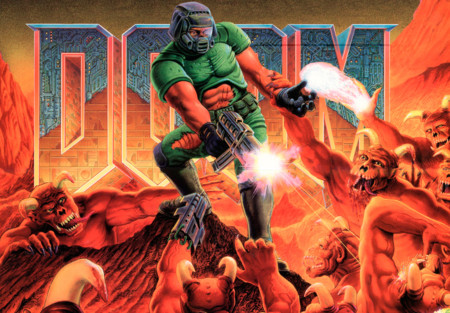

DOOM es un videojuego de disparos en primera persona creado
por la compañía estadounidense ID Software en 1993 bajo
la dirección de John Carmack
A nivel de argumento, el juego consiste en comandar a un marine,
que se encuentra de misión rutinaria en una estación en Fobos
(una de las lunas de Marte), cuando de repente se produce un fallo
en un experimento de teleportación que se llevaba a cabo allí,
abriéndose así las puertas del infierno y dejando libres a un sinfín
de demonios, y espíritus malignos que se apoderan de los cuerpos
de los marines caídos, transformándolos en zombis, infestando
rápidamente todas las instalaciones. Como protagonista, el jugador
es el único ser humano sobreviviente en la estación y su misión es
abrirse paso entre los enemigos nivel a nivel.
